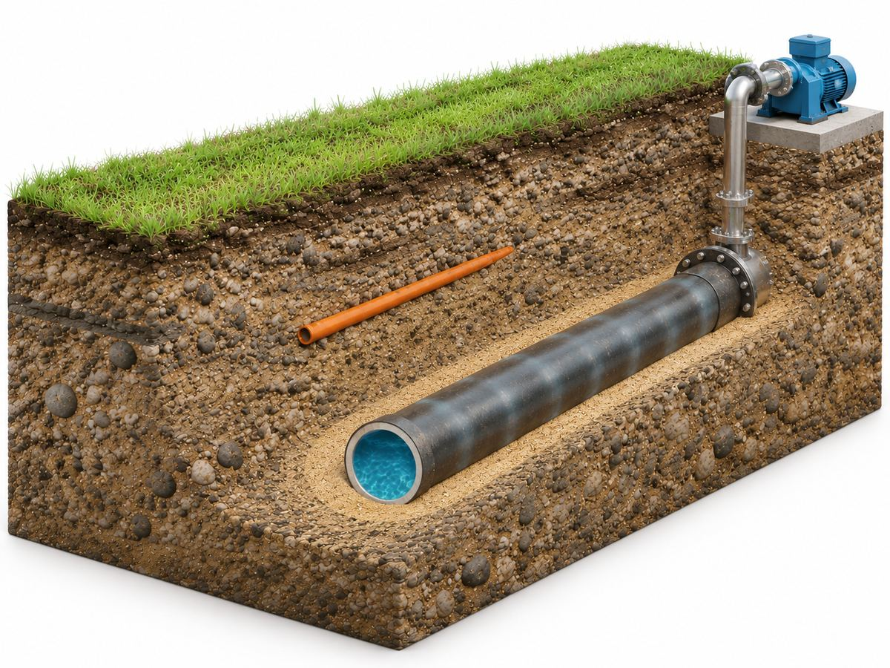
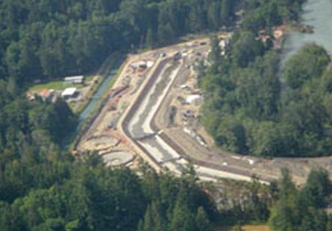

Fiber as a thermometer
A telecom fiber tracks the temperature of water flowing in a buried main.
The question
Cities already have thousands of kilometres of telecom fiber underground, often running beside water pipes. With distributed acoustic sensing (DAS), every metre of fiber becomes a seismic sensor. Can this existing infrastructure tell us what is happening inside a buried water main?

Approach
I processed large DAS ambient-noise datasets, computed time-lapse cross-correlations along the fiber, and measured seasonal changes in seismic velocity (dv/v). I then compared them with water temperature, precipitation, soil moisture and ground temperature.

Findings
- Seismic velocity in the shallow ground changes seasonally by about 1.6%.
- These changes follow a low-pass model of the water temperature (about 0.17% per kelvin) more closely than precipitation, soil moisture or ground temperature.
- Recurring pump-excited guided waves travel inside the pipe; I interpret them with a fluid-filled pipe model and the Korteweg water-hammer wave speed.
This points to passive, low-cost monitoring of flowing-water temperature, for example in cooling-water systems for data centers.
Outputs
- Poster, AGU Annual Meeting 2026, San Francisco (with G. Jin, P. Li, E. R. Martin, F. Cheng and P. He)